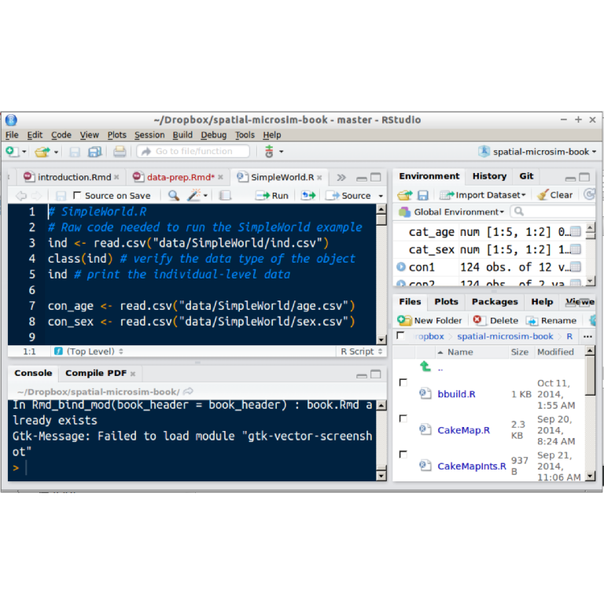

Data preparation with R
This chapter focuses on the minimum input datasets needed for the spatial microsimulation. We will build on the SimpleWorld example by demonstrating how the inputs about its inhabitants, in terms of geographical constraints and individual-level survey data, can be loaded and ‘cleaned’ in R. It is the first practical chapter, so it will also get you up-to-speed with using R via RStudio for spatial microsimulation. The aim is to produce data that is in a form ready for population synthesis and to acquaint people who are not experienced R users with the software and a workflow that will make developing spatial microsimulation models as easy as possible.
Correctly loading, manipulating and assessing aggregate and individual-level datasets will be critical to the performance of your models and the ease of modifying them, for example to include new inputs. Fortunately R is an accomplished tool for data reformatting, as we shall see. In addition to providing continuity from the previous chapter and an easily understood set of inputs, data loaded in the following steps also provide the basis for Chapter 5, in which we undertake spatial microsimulation. Of course, the datasets you use in real applications will be much larger than those that represent SimpleWorld, which contains only 33 individuals on the entire planet!
The focus of this chapter is on the methods and underlying principles of data preparation for spatial microsimulation and these will be the same regardless of the size of your datasets. Each usage case is different and you may have input for which the processing steps here are insufficient — if this is the case, see Wickham (2014b). However, in most cases, the input datasets will be similar to the ones presented here, consisting of an individual-level survey dataset consisting of categorical variables and aggregate-level constraints containing categorical counts.
Before loading the spatial microdata, you must decide on the data needed for your research. Focus on “target variables” related to the research question will help decide on the constraint variables, as we will see below Focusing only on variables of interest will ensure you do not waste time thinking about and processing additional variables that you will be of little use in the future. Regardless of the research question it is clear that the methodology depends on the availability of data. If the problem relates to variables that are simply unavailable at any level (e.g. hair length, if your research question related to the hairdressing industry), spatial microsimulation may be unsuitable. If, on the other hand, all the data is available at the geographical level of interest, spatial microsimulation may not be necessary.1 Spatial microsimulation is useful when you have an intermediary amount of data available: geographically aggregated count and a non-spatial survey. In any case, you should have a clear idea about the range of available data on the topic of interest before embarking on spatial microsimulation.
As with most spatial microsimulation models, the input consists of microdata — a non-geographical individual-level dataset — and the constraint table which represents a series of geographical zones. In some cases, you may have geographical information in your microdata, but not at the required level of detail. For example, you may have a variable on the province of each individual but need its municipality, a lower geographical level. The data used in this Chapter and throughout the book can be downloaded from the book’s GitHub repository. From this page, click on the ‘Download ZIP’ button to the right and extract the folder into a sensible place on your computer, such as the Desktop. From there, you will want to run R from the project’s root directory: open the folder in a file browser and double click on spatial-microsim-book.Rproj. This should cause RStudio to be opened at this location, with all the input data files easily accessible to R through relative file paths (you must have installed the RStudio software for this stage to work — see the Appendix).

To ease reproducibility of the analysis when working with real data, it is recommended that the process begins with a copy of the raw dataset on one’s hard disc. Rather than modifying this file, modified (‘cleaned’) versions should be saved as separate files. This ensures that after any mistakes, one can always recover information that otherwise could have been lost and makes the project fully reproducible. In this chapter, a relatively clean and very tiny dataset from SimpleWorld is used, but we still create a backup of the original dataset. We will see in Chapter how to deal with larger and more messy data, where being able to refer to the original dataset is more important. Here the focus is on the principles.
The process of loading, checking and preparing the input datasets for spatial microsimulation is generally a linear process, encapsulating the following stages:
- Decide on the constraint and target variables
- Loading the data
- Re-categorise individual-level data
- Set variable and value names
- ‘Flatten’ individual-level data
‘Stripping down’ the datasets so that they only contain the bare essential information will enable focus on the information that really matters. The input datasets in the example used for this chapter are already bare, but in real world surveys there may be literally hundreds of variables clogging up the analysis and your mind. It is good practice to remove excess data at the outset. Provided you have a good workflow, keeping all original data files unmodified for future reference, it will be easy to go back and add extra variables at a later stage. Following Occam’s razor which favors simple solutions (Blumer et al. 1987), it is often best to start with a minimum of data and add complexity subsequently rather than vice versa.
Spatial microsimulation involves combining individual and aggregate-level data. Each level should be given equal consideration when preparing the inputs for the modelling process. The limiting factor for model fit in many cases will be the number of linking variables, variables shared between the individual and aggregate level datasets which are used to calculate the weights allocated to the individuals for each zone (see Glossary). These are also referred to as constraint variables, as they constrain the individual weights per zone (Ballas et al. 2005).
If there are no shared variables between the aggregate and individual-level data generating an accurate synthetic population is impossible. In this case, your only alternative is to consider only the marginal distribution of the variable and make a random selection with the distribution used as a probability. However, this implicitly assumes that there are no correlations between the available variables. If there are only a few shared variables (e.g. age, sex, employment status), your options are limited. Increasingly, however, there are many linking variables to chose from as questionnaires become broader and more available. In this case the choice of constraints becomes important: which and how many to use, their order and their relationship to the target variable should all be considered at the outset when choosing the input data and constraints.
Target and constraint variables
The geographically aggregated data should be the first consideration when deciding on the input data. This is because the geographical data is essential for making the model spatial: without good geographical data, there is no way to allocate the individuals to different geographical zones.
The first critical consideration for the constraint data is coverage: ideally close to 100% of each zone’s total population should be included in the counts. Also, the survey must have been completed by a number of residents proportional to the total number of inhabitants in every geographical zone under consideration. It is important to recognise that many geographically aggregated datasets may be unsuitable for spatial microsimulation due to sample size: geographical information based on a small sample of a zone’s population is not a good basis for spatial microsimulation.
To take one example, estimates of the proportion of people who do not get sufficient sleep in the Australian state of Victoria, from the 2011 VicHealth Indicators Survey, is not a suitable constraint variable.
Constraint variables should be integer counts, and should contain sufficient categories for each variable. Ideally, each relevant category and cross-tabulation should be represented. It is unusual to have a baby with a high degree qualification, but it may be useful to know there is an absence of such individuals. The sleep dataset meets neither of these criteria. It is based on a small sample of individuals (on average 300 per geographic zone, less than 1% of the total population). Also it is a binary variable, dividing people into ‘adequate’ and ‘inadequate’ sleep categories. Instead, geographical datasets from the 2011 Census should be used. These may contain fewer variables, but they will provide counts for different categories and have almost 100% coverage of the population.
To continue with the Australian example, imagine we are interested only in Census data at the SA2 level, the second smallest unit for the release of Census data. A browse of the available datasets on an online portal reveals that information is available on a wide range of topics, including industry of employment, education level and total personal weekly income (divided into 10 bands from $1 - $199 to $2000+). Which of these dozens of variables do we select of the analysis? It depends on the research question and the target variable or variables of interest.
If we are interested in geographic variability in economic inequality, for example, the income data would first on the list to select. Additional variables would likely include level of education, type of employment and age, to discover the wider context of the problem. If the research question related to energy and sustainability, to take another example, variables related to distance travelled to work and housing would be of greater relevance. In each of these examples the target variable determines the selection of constraints. The target variable is the thing that we would like spatial microdata on, as illustrated by the following two research questions.
How does income inequality vary from place to place? To answer this question it is not sufficient to have aggregate-level statistics (e.g. average household income). So income per person must be simulated for each zone, using spatial microsimulation. Sampling from a national population provides a more realistic distribution than simply assuming every person of a given income band earns a certain amount: this is clearly not the case as income distributions are not flat (they tend to have positive skew).
How does energy use vary over geographical space? This question is more complicated as there is no single variable on ‘energy use’ that is collected by statistical agencies at the aggregate, let alone individual, level. Rather, energy use is a composite target variable that is composed of energy use in transport, household heating and cooling and other things. For each type of energy use, the question must eventually be simplified to coincide with survey questions that are actually asked in Census surveys (e.g. ‘where do you work?’, from which distance travelled to work may be ascertained). Such considerations should guide the selection of aggregate level (generally Census-based) geographic count data. Of course, available datasets vary greatly from country to country so selection of appropriate datasets is highly context dependent.
The following considerations should inform the selection of individual-level microdata:
- Linking variables: are there enough variables in the individual-level data that are also present in the geographically aggregated constraints? Even when many linking variables are available, it is important to determine the fit between the categories in each. If age is reported in five year bands in the aggregate-level data, but only in 20 year bands in the individual-level data, for example, this could be problematic if the research question is highly aged dependent.
- Representiveness: is the sample population representative of the areas under investigation?
- Sample size and diversity: the input dataset must be sufficiently large and diverse to mitigate the empty cell problem.
- Target variables: are these, or proxies for them, included in the dataset?
In addition to these essential characteristics of the individual-level dataset, there are qualities that are desirable but not required. These include:
- Continuity of the survey: will the survey be repeated on a regular basis into the future? If so, the analysis can form the basis of ongoing work to track change over time, perhaps as part of a dynamic microsimulation model.
- Geographic variables: although it is the purpose of spatial microsimulation to allocate geographic variables to individual-level data, it is still useful to have some geographic information. In many national UK surveys, for example, the region (the coarsest geographical level) of the respondent is reported. This information can be useful in identifying the extent to which the difference between the geographic extent of the survey and microsimulation study area affects the results. This is an understudied area of knowledge where more work is needed.
In terms of the number of constraints that is appropriate there is no ‘magic number’ that is correct in every case. It is also important to note that the number of variables is not a particularly good measure of how well constrained the data will be. The total number of categories used to constrain the weights is in fact more important.
For example, a model constrained by two variables, each containing 10 categories (20 constraint categories in total), will be better constrained than a model constrained by 5 binary variables such as male/female, young/old etc. That is not to say that the former set of constraints is better (as emphasised above, that depends on the research question), simply that the weights will be more finely constrained.
A special type of constraint variable is cross-tabulated categories. This involves subdividing the categories in one variable by the categories of another. Cross-tabulated constraint variables provide a more detailed picture on not only the prevalence of particular categories, but the relationships between them. For the purposes of spatial microsimulation, cross-tabulated variables can be seen as a single variable.
If there are 5 age categories and 2 sex categories, this can be seen as a single constraint variable (age/sex) with 10 categories. Clearly in terms of retaining detailed local information (e.g. all young males moving out of a zone), cross-tabulated variables are preferable. This raises the question: what happens when a single variable (e.g age) is used in multiple cross-tabulated constraints (e.g. age/sex and age/income). In this case spatial microsimulation can still be used, but the result may not converge to a single answer because the gender distribution may be disrupted by the age/income constraint. Further work is needed to test this but from theory we can be sure: a three way cross-tabulated constraint (age/sex/income) would be ideal in this case because it provides more information than two-way marginal distributions.
The level of detail within the linking variables is an important determinant of the fidelity of the resulting synthetic population. This can be measured in term of the number of linking variables (there are 2 in SimpleWorld: age and sex) and the more measure of the number of categories within all linking variables (there are 4 in SimpleWorld: male, female, young and old). This latter measure is preferable as it provides a closer indication of the ‘bin size’ used to categorise individuals during population synthesis. Still, the nature of both linking variables and their categories should be considered: an age variable contain 5 categories may look good on paper. However, if those categories are defined by the breaks c(0, 5, 10, 15, 20, 90), the linking variable will not be effective at accurately recreating age distributions. More evenly distributed categories (such as c(0, 20, 40, 60, 80, 120) to continue the age example) are preferable.
(As an important aside for R learners, we use R syntax here to define the breaks instead of the more common ‘0 to 5’, 6 to 10’ age category notation because this is how numerical variables are best categorised in R. To see how this works, try entering the following into R’s command line: cut(x = c(20, 21, 90, 35), breaks = c(0, 20, 40, 60, 80, 120)). The result is a factor variable as follows: (0,20] (20,40] (80,120] (20,40]. This output uses standard notation for defining bins of continuous data: the (0, 20] term means, in English, “any value from greater than zero, up to and including 20”. In classic mathematical notation this reads 0 < x ≤ 20. Note the ] symbol means ‘including’.)
but if on closer inspection those categories predominantly define very small subsets of the population, Even when measuring constraint variables by categories rather than the cruder measure of number variables, there is still no consensus about the optimal amount. Norman (1999) advocates including the ``maximum amount of information in the constraints’’, implying that the more constraint categories the merrier. Harland (2012) warns that over-constraining the model can cause problems. In any case, there is a clear link between the quality and quantity of constraint variables used in the model and the fidelity of the output microdata.
If constraint variables come from different sources, check the coherence of these datasets. In some cases the total number of individuals will not be consistent between constraint variables and the procedure will not work properly. This can happen if constraint variables are measured using different base populations or at different levels. Number of cars per household, for example, is usually collected at the household level so will contain lower counts than variables on individuals (e.g. age). A solution is to set all population totals equal to the most reliable constraint variable by multiplying values in each category by a fixed amount. However, caution should be taken when using this approach because it assumes that the relationship between categories is the same across all level or base populations. In the case of car ownership, where larger households are likely to own more cars, this assumption clearly would not hold: inferring individual-level marginals from household-level data would in this case lead to an underestimate of car availability.
After suitable constraint variables have been chosen — and remember that the constraints can be changed at a later stage to improve the model or for testing — the next stage is to load the data. Following the SimpleWorld example, we load the individual-level dataset first. This is because individual-level data from surveys is often more difficult to format. Individual-level datasets are often larger and more complex than the constraint data, which are simply integer counts of different categories. Of course, it is possible that the data you have are not suitable for spatial microsimulation because they lack linking variables. We assume that you have already checked this. The checking process for the datasets used in this chapter is simple: both aggregate and individual-level tables contain age (in continuous form in the microdata, as two categories in the aggregate data) and sex, so they can by combined. Loading the data involves transferring information from a local hard disc into R’s environment, where it is available in memory.
Loading input data
Real-world individual-level data are provided in many formats. These ultimately need to be loaded into R as a data.frame object. Note that there are many ways to load data into R, including read.csv() and read.table() from base R. Useful commands for loading proprietary data formats include read_excel and read.spss() from readxl and foreign packages respectively.
More time consuming is cleaning the data and there are also many ways to do this. In the following example we present steps needed to load the data underlying the SimpleWorld example into R.2 Some parts of the following explanation are specific to the example data and the use of Iterative Proportional Fitting (IPF) as a reweighting procedure (described in the next chapter). Combinatorial optimisation approaches, for example (as well as careful use of IPF methods, e.g. using the mipfp package), are resilent to differences in the number of individuals according to each constraint. However, the approach, functions and principles demonstrated will apply to the majority of real input datasets for spatial microsimulation. This section is quite specific to data preparation for spatail microsimulation; for a more general introduction to data formatting and cleaning methodology see Wickham (2014). To summarise this information, the last section of this chapter provides a checklist of items to ensure that the data has been adequately cleaned ready for the next phase.
In the SimpleWorld example, the case the individual-level dataset is loaded from a simple .csv file:
# Load the individual-level data
ind <- read.csv("data/SimpleWorld/ind-full.csv")
class(ind) # verify the data type of the object
#> [1] "data.frame"
ind # print the individual-level data
#> id age sex income
#> 1 1 59 m 2868
#> 2 2 54 m 2474
#> 3 3 35 m 2231
#> 4 4 73 f 3152
#> 5 5 49 f 2473Constraint data are usually made available one variable at a time, so these are read in one file at a time:
con_age <- read.csv("data/SimpleWorld/age.csv")
con_sex <- read.csv("data/SimpleWorld/sex.csv")We have loaded the aggregate constraints. As with the individual level data, it is worth inspecting each object to ensure that they make sense before continuing. Taking a look at age_con, we can see that this data set consists of 2 categories for 3 zones:
con_age
#> a0.49 a.50.
#> 1 8 4
#> 2 2 8
#> 3 7 4This tells us that there 12, 10 and 11 individuals in zones 1, 2 and 3, respectively, with different proportions of young and old people. Zone 2, for example, is heavily dominated by older people: there are 8 people over 50 whilst there are only 2 young people (under 49) in the zone.
Even at this stage there is a potential for errors to be introduced. A classic mistake with areal (geographically aggregated) data is that the order in which zones are loaded can change from one table to the next. The constraint data should therefore come with some kind of zone id, an identifying code. This usually consists of a unique character string or integer that allows the order of different datasets to be verified and for data linkage using attribute joins. Moreover, keeping the code associated with each administrative zone will subsequently allow attribute data to be combined with polygon shapes and visualised using GIS software.
If we’re sure that the row numbers match between the age and sex tables (we are sure in this case), the next important test is to check the total populations of the constraint variables. Ideally both the total study area populations and row totals should match. If the row totals match, this is a very good sign that not only confirms that the zones are listed in the same order, but also that each variable is sampling from the same population base. These tests are conducted in the following lines of code:
sum(con_age)
#> [1] 33
sum(con_sex)
#> [1] 33
rowSums(con_age)
#> [1] 12 10 11
rowSums(con_sex)
#> [1] 12 10 11
rowSums(con_age) == rowSums(con_sex)
#> [1] TRUE TRUE TRUEThe results of the previous operations are encouraging. The total population is the same for each constraint overall and for each area (row) for both constraints. If the total populations between constraint variables do not match (e.g. because the population bases are different) this is problematic (see the Glossary for a description of the population base). Appropriate steps to normalise the errant constraint variables are described in the CakeMap Chapter (). This involves scaling the category totals so the totals are equal across all categories.
Subsetting to remove excess information
In the above code, data.frame objects containing precisely the information required for the next stage were loaded. More often, superfluous information will need to be removed from the data and subsets taken. It is worth removing superfluous variables early, to avoid over-complicating and slowing-down the analysis. For example, if ind had 100 variables of which only the 1st, 3rd and 19th were of interest, the following command could be used to update the object. Note that only the relevant variables, corresponding to the first, third and nineteenth columns are retained:3
ind <- ind[, c(1, 3, 19)]In the SimpleWorld dataset, only the age and sex variables are useful for reweighting: we can remove the others for the purposes of allocating individuals to zone. Note that it is important to keep track of individual ID’s, to ensure individuals do not get mixed-up by a function that changes their order (merge(), for example, is a function that can cause havoc by changing the order of rows). Before removing the superflous income variable, we will create a backup of ind that can be referred back-to when we have a spatial microdataset:
ind_orig <- ind # store the original ind dataset for future reference
ind <- ind[, -4] # remove income variableAlthough ind in this case is small, it will behave in the same way as larger datasets. Starting small is sensible, providing opportunities for testing subsetting syntax in R. It is common, for example, to take a subset of the working population base: those aged between 16 and 74 in full-time employment. Methods for doing this are provided in the Appendix ( ).
Re-categorising individual-level variables
Before transforming the individual-level dataset ind into a form that can be compared with the aggregate-level constraints, we must ensure that each dataset contains the same information. It can be more challenging to re-categorise individual-level variables than to re-name or combine aggregate-level variables, so the former should usually be set first. An obvious difference between the individual and aggregate versions of the age variable is that the former is of type integer whereas the latter is composed of discrete bins: 0 to 49 and 50+. We can categories the variable into these bins using cut():4
# Test binning the age variable
brks <- c(0, 49, 120) # set break points from 0 to 120 years
cut(ind$age, breaks = brks) # bin the age variable
#> [1] (49,120] (49,120] (0,49] (49,120] (0,49]
#> Levels: (0,49] (49,120]Note that the output of the above cut() command is correct, with individuals binned into one of two bins, but that the labels are rather strange.[This [a,b) category notation follows the International Organization for Standardization (ISO) 80000-2:2009 standard for mathematical notation: Square brackets indicate that the endpoint is included in the set, curved brackets indicate that the endpoint is not included. Hence (49,120] means ‘any number greater than 49 but less than or equal to 120’. ] To change these category labels to something more readable for people who do not read ISO standards for mathematical notation (most people!), we add another argument, labels to the cut() function:
# Convert age into a categorical variable
labs <- c("a0_49", "a50+") # create the labels
cut(ind$age, breaks = brks, labels = labs)
#> [1] a50+ a50+ a0_49 a50+ a0_49
#> Levels: a0_49 a50+The factor generated now has satisfactory labels: they match the column headings of the age constraint, so we will save the result. (Note, we are not loosing any information at this stage because we have saved the orginal ind object as ind_orig for future reference.)
# Overwrite the age variable with categorical age bands
ind$age <- cut(ind$age, breaks = brks, labels = labs)Users should beware that cut results in a vector of class factor. This can cause problems in subsequent steps if the order of constraint column headings is different from the order of the factor labels, as we will see in the next section.
Matching individual and aggregate level data names
Before combining the newly recategorised individual-level data with the aggregate constraints, it is useful to for the category labels to match up. This may seem trivial, but will save time in the long run. Here is the problem:
levels(ind$age)
#> [1] "a0_49" "a50+"
names(con_age)
#> [1] "a0.49" "a.50."Note that the names are subtly different. To solve this issue, we can simply change the names of the constraint variable, after verifying they are in the correct order:
names(con_age) <- levels(ind$age) # rename aggregate variablesWith both the age and sex constraint variable names now matching the category labels of the individual-level data, we can proceed to create a single constraint object we label cons. We do this with cbind():
cons <- cbind(con_age, con_sex)
cons[1:2, ] # display the constraints for the first two zones
#> a0_49 a50+ m f
#> 1 8 4 6 6
#> 2 2 8 4 6‘Flattening’ the individual level data
We have made steps towards combining the individual and aggregate datasets and now only need to deal with 2 objects (ind and cons) which now share category and variable names. However, these datasets cannot possibly be compared because they measure very different things. The ind dataset records the value that each individual takes for a range of variables, whereas cons counts the number of individuals in different groups at the geographical level. These datesets are have different dimensions:
dim(ind)
#> [1] 5 3
dim(cons)
#> [1] 3 4The above code confirms this: we have one individual-level dataset comprising 5 individuals with 3 variables (2 of which are constraint variables and the other an ID) and one aggregate-level constraint table called cons, representing 3 zones with count data for 4 categories across 2 variables.
The dimensions of at least one of these objects must change before they can be correctly easily compared. To do this we ‘flatten’ the individual-level dataset. This means increasing its width so each column becomes a category name. This allows the individual data to be matched to the geographical constraint data. In this new dataset (which we label ind_cat, short for ‘categorical’), each variable becomes a column containing Boolean numbers (either 1 or 0, representing whether the individual belongs to each category or not). Note that each row in ind_cat must contain a one for each constraint variable; the sum of every row in ind_cat should be equal to the number of constraints. (This can be verified with rowSums(ind_cat).)
To undertake this ‘flattening’ process the model.matrix() function is used to expand each variable in turn. The result for each variable is a new matrix with the same number of columns as there are categories in the variable. Note that the order of columns is usually alphabetical: this can cause problems if the columns in the constraint tables are not ordered in this way.
Knoblauch and Maloney (2012) provide a lengthier description of this flattening process.
The second stage is to use the colSums() function to take the sum of each column.5
cat_age <- model.matrix(~ ind$age - 1)
cat_sex <- model.matrix(~ ind$sex - 1)[, c(2, 1)]
# Combine age and sex category columns into single data frame
(ind_cat <- cbind(cat_age, cat_sex)) # brackets -> print result
#> ind$agea0_49 ind$agea50+ ind$sexm ind$sexf
#> 1 0 1 1 0
#> 2 0 1 1 0
#> 3 1 0 1 0
#> 4 0 1 0 1
#> 5 1 0 0 1Note that second call to model.matrix is suffixed with [, c(2, 1)]. This is to swap the order of the columns: the column variables are produced from model.matrix is alphabetic, whereas the order in which the variables have been saved in the constraints object cons is male then female. Such subtleties can be hard to notice yet completely change one’s results so be warned: the output from model.matrix will not always be compatible with the constraint variables.
To check that the code worked properly, let’s count the number of individuals represented in the new ind_cat variable, using colSums:
colSums(ind_cat) # view the aggregated version of ind
#> ind$agea0_49 ind$agea50+ ind$sexm ind$sexf
#> 2 3 3 2
ind_agg <- colSums(ind_cat) # save the resultThe sum of both age and sex variables is 5 (the total number of individuals): it worked! Looking at ind_agg, it is also clear that the object has the same ‘width’, or number of columns, cons. This means that the individual-level data can now be compared with the aggregate-level data. We can check this by inspecting each object (e.g. via View(ind_agg)). A more rigorous test is to see if ind_agg can be combined with ind_agg, using rbind:
rbind(cons[1,], ind_agg) # test compatibility of ind_agg and cons
#> a0_49 a50+ m f
#> 1 8 4 6 6
#> 2 2 3 3 2If no error message is displayed on you computer, the answer is yes. This shows us a direct comparison between the number of people in each category of the constraint variables in zone and and in the individual level dataset overall. Clearly, the fit is not very good, with only 5 individuals in total existing in ind_agg (the total for each constraint) and 12 in zone 1. We can measure the size of this difference using measures of goodness of fit. A simple measure is total absolute error (TAE), calculated in this case as sum(abs(cons[1,] - ind_agg)): the sum of the positive differences between cell values in the individual and aggregate level data.
The purpose of the reweighting procedure in spatial microsimulation is to minimise this difference (as measured in TAE above) by adding high weights to the most representative individuals.
Chapter summary
To summarise, we have learned about and implemented methods for loading and preparing input data for spatial microsimulation in this chapter. The following checklist outlines the main features of the input datasets to ensure they are ready for reweighting, covered in the next chapter:
- Both constraint and target variables are loaded in R: in the former rows correspond to individuals; in the latter rows correspond to a spatial zone.
- The categories of the constraint variables in the individual-level dataset are identical to the column names of the constraint variables. (An example of the process needed to arrive at this state is the conversion of a continuous ages variable in the individual-level dataset into a categorical variable to match the constraint data.)
- The structure of the individual and aggregate-level datasets must eventually be the same: the column names of
consandind_catin the above example are the categories of the constraint variables.ind_catis the binary (or Boolean, containing 0s and 1s) version of the individual-level dataset. This allows creation of an aggregated version of the individual-level data that has the same dimensions (and is comparable with) the constraint data for each zone. - The total population of each zone is represented as the sum counts for each constraint variable.
Note that in much research requiring the analysis of complex data, the collection, cleaning and loading of the data can consume the majority of the project’s time. This applies as much to spatial microsimulation as to any other data analysis task and is an essential stage before moving on the more exciting analysis and modelling. In the next chapter we progress to allocate weights to each individual in our sample, continuing with the example of SimpleWorld.
References
To explore geographical variability at a low spatial resolution, for example, the necessary data may be already available, as surveys often state which region each individual inhabits. Spatial microsimulation would only be necessary in this case if higher spatial resolution were needed.↩
All data and code to replicate the procedures outlined in the book are available publicly from the spatial-microsimulation-book GitHub repository, as described above. We recommend loading the input data and playing around with it.↩
An alternative way to remove excess variables is to use
NULLassignment to remove columns.ind$age <- NULL, for example, would remove the age variable. The minus sign can also be used to remove specific rows or columns, as illustrated with the syntax[, -4]below.↩The combination of curved and square brackets in the output from the
cutfunction may seem strange but this is an International Standard: curved brackets mean ‘excluding’ and square brackets mean ‘including’. The output(49, 120], for example, means ‘from 49 (excluding 49, but including 49.001) to 120 (including the exact value 120)’. See http://en.wikipedia.org/wiki/ISO_31-11 for more on international standards on mathematical notation.↩As we shall see in Section , only the former of these is needed if we use the ipfp package for re-weighting the data, but both are presented to enable a better understanding of how IPF works.↩